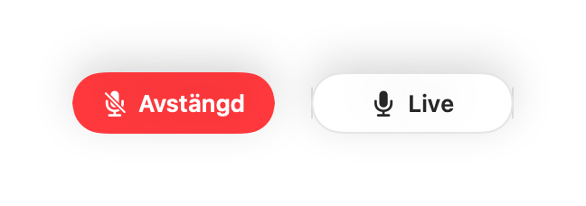
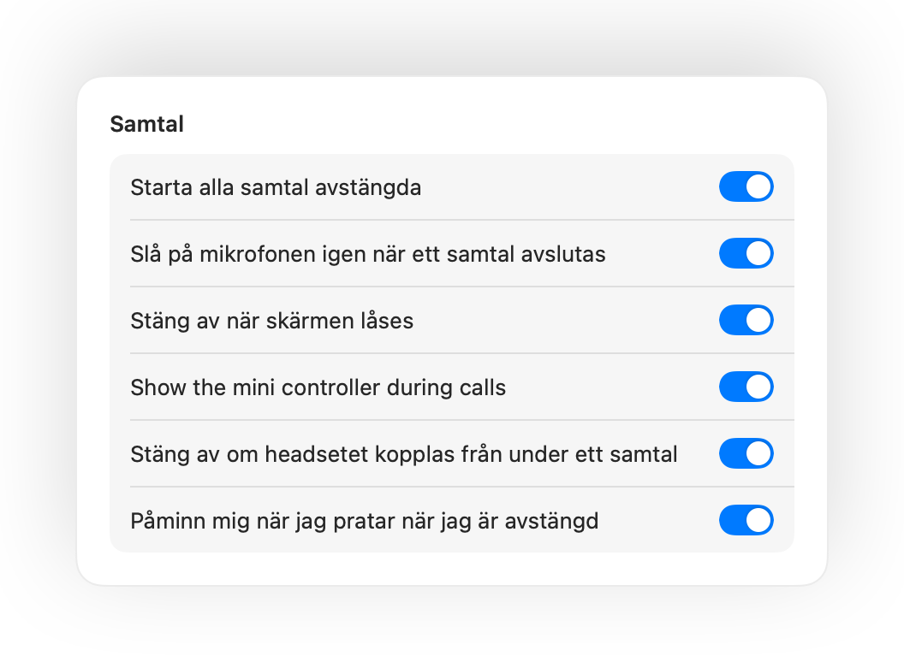
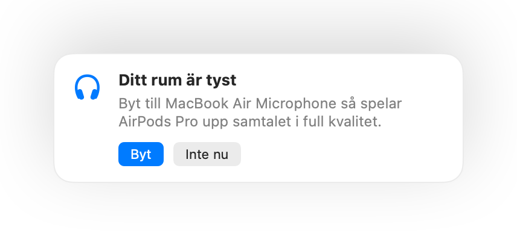
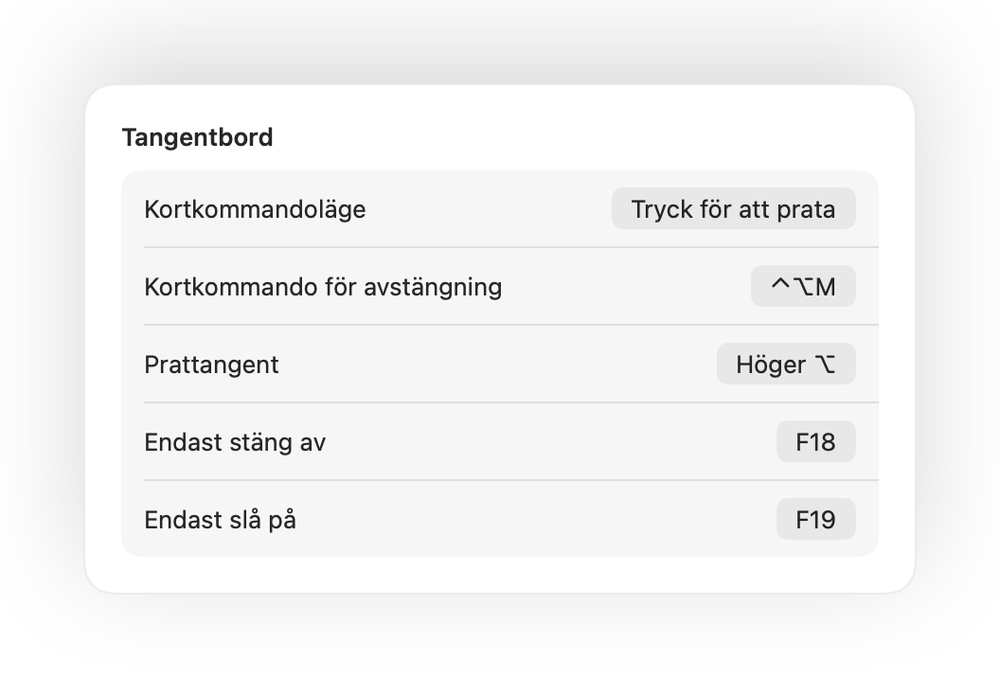

Tryck på dina AirPods.
Tryck på skaftet under vilket samtal som helst. Muffle stänger av själva mikrofonen, så Meet, Zoom, Teams och alla andra appar inte hör något.

Muffle för Mac
Tryck på dina AirPods eller ett kortkommando. Muffle stänger av själva mikrofonen, så Google Meet, Zoom, Teams, Slack och alla andra appar hör bara tystnad.
Gratis i 3 dagar. Sedan en betalning, ingen prenumeration. För macOS 14 Sonoma och senare.

Muffle stänger av mikrofonen på hårdvarunivå, så det spelar ingen roll vilken app, webbläsare eller flik som använder den.
Tryck på skaftet under vilket samtal som helst. Muffle stänger av själva mikrofonen, så Meet, Zoom, Teams och alla andra appar inte hör något.
Ett kortkommando för alla appar, även när samtalet är i en flik i bakgrunden. Håll det intryckt för att prata, eller ändra till tryck för att prata.
Muffle känner igen din röst och påminner dig, innan du förklarar hela din idé för ingen.

En liten flytande knapp visar mikrofonstatus och stänger av med ett klick. Grönt är live, rött är avstängt.

Om du börjar prata när du är avstängd säger Muffle till dig, innan du hinner förklara hela din idé för tomma intet.
Tryck en gång på skaftet under ett samtal för att stänga av, och tryck igen för att slå på. Det fungerar även i Chrome, där Google Meet och andra webbsamtal ignorerar AirPods-tryckningar.
Control-Option-M stänger av dig överallt, även när samtalet ligger i en bakgrundsflik. Håll intryckt för att prata när du är avstängd, släpp för att stänga av igen.
En liten flytande knapp visar din mikrofonstatus under samtal. Klicka på den för att stänga av eller slå på.
Starta alla samtal avstängda, slå på mikrofonen igen när ett samtal avslutas och stäng av när du låser din Mac.

Slog du på för att säga en sak? Om du sedan är tyst under tiden du valt stänger Muffle av dig igen. Endast din röst räknas, inte tangenttryckningar eller bakgrundsljud.
Chrome, Zoom och Teams ändrar din mikrofonnivå på egen hand. Lås den så återställer Muffle den.
Med AirPods i ett tyst rum föreslår Muffle din Macs mikrofon så att dina AirPods spelar upp samtalet i full kvalitet. När det blir bullrigt föreslår den mikrofonen i dina AirPods.

Välj hur ditt kortkommando ska fungera: tryck för att stänga av eller slå på, håll intryckt för att prata eller håll intryckt för att stänga av vid en hostning. Lägg till separata tangenter för att stänga av och slå på, eller håll en enskild tangent som Höger ⌥ eller en extra musknapp.

Om dina hörlurar kopplas bort mitt i samtalet stänger Muffle av innan samtalet växlar till datorns mikrofon och sänder ut hela rummet.
Stäng av från appen Genvägar, Siri, en Stream Deck, Raycast eller en knapp i Kontrollcenter.
Ett grönt eller rött sken runt skärmen, en färgad menyradsikon, en flytande knapp och ett ljud som du kan stänga av för varje mikrofon. Slå på de du vill ha.
Muffle spelar aldrig in, sparar eller skickar ljud. Appen slår bara på och stänger av din mikrofon och läser av ljudnivån. Inga konton, ingen analys, ingen spårning.
Installera Muffle från Mac App Store och tillåt mikrofonåtkomst.
Gå med i ett möte i valfri app som vanligt.
Tryck på dina AirPods, tryck Control-Option-M eller klicka på ikonen i menyraden för att stänga av.
Ja. Chrome skickar inte vidare tryckningen på AirPods till webbsamtal, så Muffle fångar upp den och stänger av själva mikrofonen. Detsamma gäller alla samtal i en webbläsarflik.
Din mötesapp kan fortfarande visa att mikrofonen är på, eftersom Muffle stänger av själva mikrofonen i stället för appens knapp. Andra hör tystnad oavsett. Muffle-ikonen i menyraden blir röd när du är avstängd.
AirPods Pro, AirPods 3 och senare samt AirPods Max, plus Beats-modeller som har samtalskontroller. Kortkommandot och menyraden fungerar med vilken mikrofon som helst.
Ja. Muffle fungerar med alla appar på din Mac som använder mikrofonen, både skrivbordsappar och samtal i webbläsaren.
Nej. Prova alla funktioner gratis i 3 dagar och lås sedan upp Muffle med ett enda köp.
macOS skickar bara vidare tryckningar på AirPods till appar som använder mikrofonen, så Muffle håller en tyst anslutning öppen under samtal. Inget spelas in.
Muffle slår på mikrofonen igen när appen avslutas, så du blir aldrig fast utan ljud.
macOS 14 Sonoma och senare. Knappen i Kontrollcenter kräver macOS 26 eller senare.
Ja. Välj Tryck för att prata i Inställningar och håll kortkommandot intryckt för att prata. Du kan också hålla en enskild tangent som Höger ⌥ eller fn, eller en extra musknapp.
När ett samtal använder mikrofonen i AirPods växlar de till samtalsläge, vilket spelar upp ljud med lägre kvalitet. I ett tyst rum föreslår Muffle din Macs mikrofon i stället, så att dina AirPods fortsätter spela upp i full kvalitet.
Nej. Muffle känner igen tal med Apples ljudanalys direkt på enheten, så bara tal räknas. Tangenttryckningar, klick och bakgrundsljud gör det inte, och inget spelas in.
Korta, praktiska svar för att stänga av din mikrofon på en Mac, i alla appar.
Muffle är gratis att prova i 3 dagar.